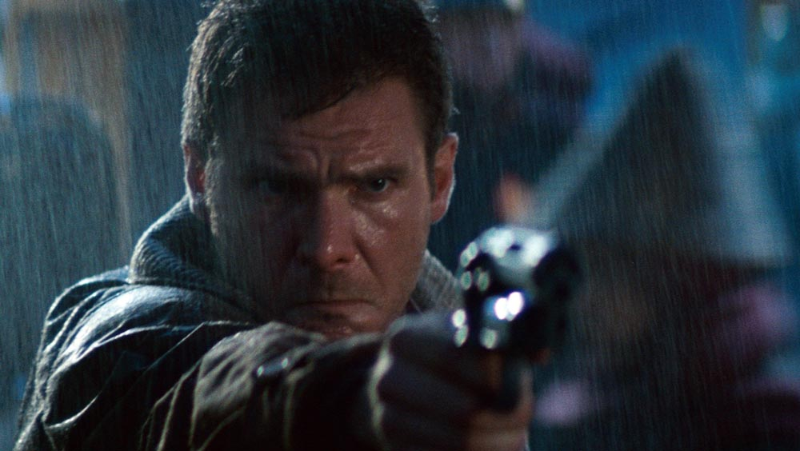
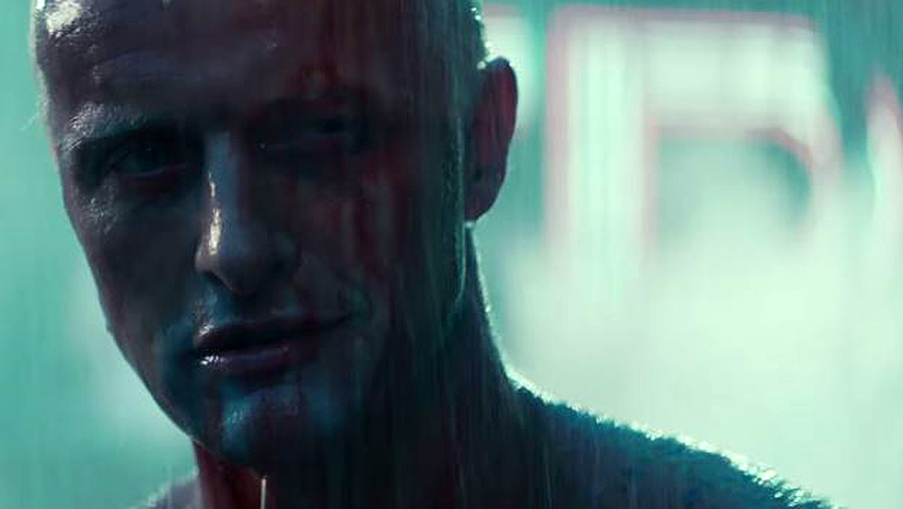

Wien am 11.05.2022
Damals ein fürchterlicher Flop, heute eine Ikone der Science Fiction und ein stilbildender Film. Blade Runner, der Kultklassiker schlechthin, hat wie kaum ein anderes Werk ein ganzes Genre geprägt und nachhaltig beeinflusst.
Die Vision unserer Zukunft, unserer Welt und der Menschen die sie bewohnen, ist schlichtweg beeindruckend. Die Mischung aus Dreck und Glanz, aus weitläufigen Häuserschluchten und klaustrophobischen Gassen, aus klassischen Hard-Boiled Figuren und philosophischen Themen, ist nur ein Bruchteil der Brillanz, die Blade Runner auszeichnet.

Rick Deckard
Rick Deckard (Harrison Ford), äußerlich wie innerlich abgestumpft, wird wieder in seinen alten Dienst aufgenommen. Replikanten, die dem Menschen zum verwechseln ähnlich sind und sich unerlaubt auf der Erde aufhalten, müssen von ihm gefunden und getötet – oder in Fachkreisen: „aus dem Verkehr gezogen“ – werden. Er ist nun wieder ein sogenannter „Blade Runner“ und bekommt es sofort mit vier gefährlichen Nexus 6-Replikanten zu tun, die sich nach einer Meuterei auf die Erde abgesetzt haben.
Wer nun meint, hier die Vorlage für einen stupiden Special-Effects-Action-Blockbuster-Schwachsinn zu wittern, darf sich ertappt fühlen und gibt damit preis, den Film noch nie gesehen zu haben (ein Versäumnis, das sofort nachzuholen ist!). Blade Runner ist die zutiefst philosophische, meditative, aber auch spannende Frage nach Menschlichkeit schlechthin, nach dem was uns eigentlich zu Menschen macht. Auf der einen Seite steht Deckard, der versucht in jener chaotischen Welt sein Gefühlsleben zu ordnen und sich dabei just in Rachel (Sean Young) verliebt – ihres Zeichens selbst ein Nexus 6 – während er gleichzeitig andere ihrer Art beseitigen muss. Auf der anderen Seite befinden sich die Replikanten selbst, versammelt rund um den gleichermaßen enigmatischen wie charismatischen Anführer Roy Batty (Rutger Hauer), deren Ziel es ist, ihre begrenzte Lebensspanne von vier Jahren zu verlängern und die Unausweichlichkeit des Todes zu überwinden um zumindest noch eine Weile die (zweifelhaften) Freuden des Lebens zu genießen.

Roy Batty
Die überbordende Fantasie, mit der diese Zukunftsvision bis ins kleinste Detail geschaffen wurde und die unbeschreiblich intensive atmosphärische Dichte des Films erweitern die Dimension des ohnehin komplexen Inhalts um ein vielfaches. Ridley Scott schuf mit Blade Runner ein thematisch anspruchsvolles, glaubwürdiges und gleichzeitig spannendes Meisterwerk, das dank seiner Bilder, Figuren und Stimmung bis heute nichts an Relevanz und Wirkung eingebüßt hat und den man immer und immer wieder genießen kann. Blade Runner ist ein wahrhaft zeitloser Klassiker des Sci-Fi Genres, der damals vielleicht gerade deshalb ein Flop wurde, weil er seiner Zeit so weit voraus war.
Regie: Ridley Scott, Drehbuch: Hampton Fancher, David Webb Peoples, Darsteller: Harrison Ford, Rutger Hauer, Sean Young, Edward James Olmos, Daryl Hannah, Laufzeit: 117 Minuten